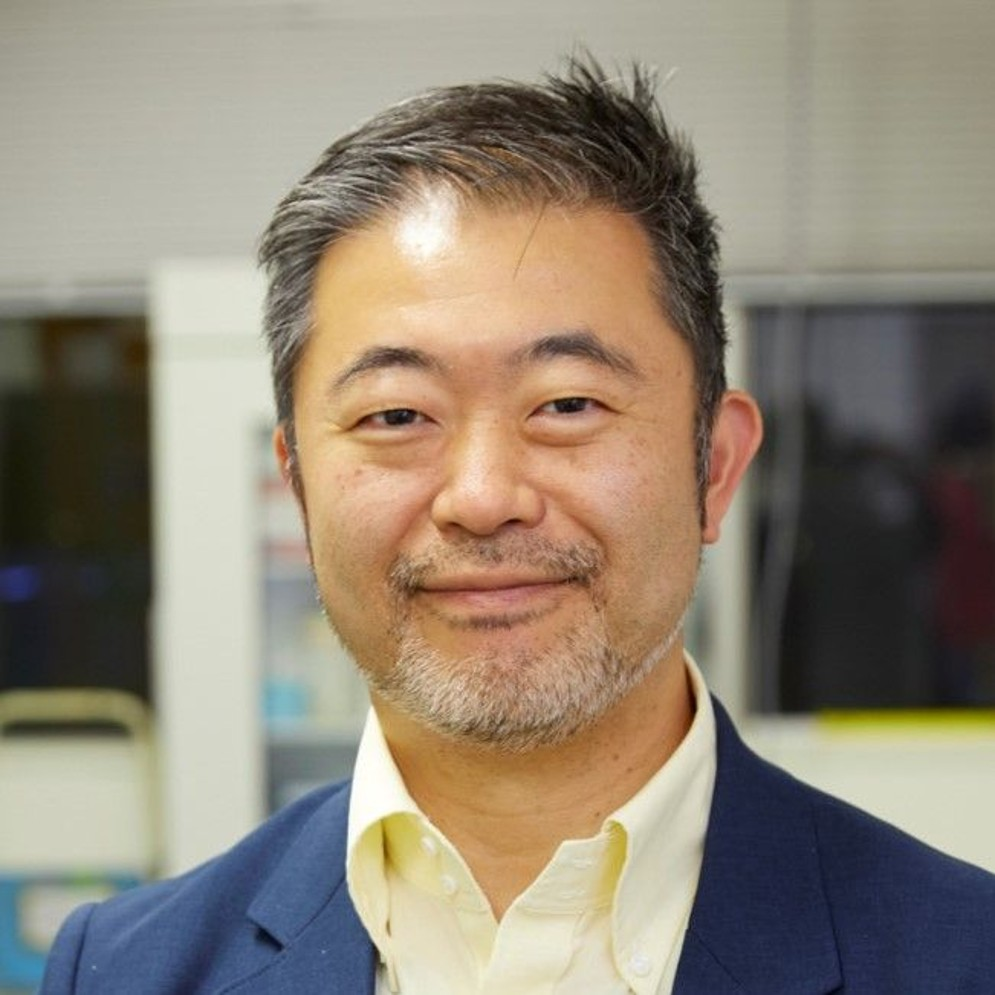
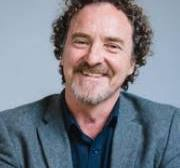
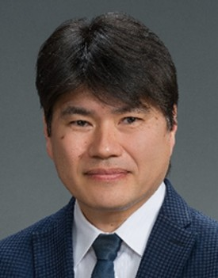
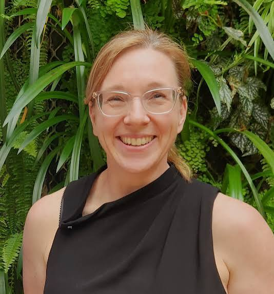

The UQ–UTokyo Workshop 2026 is an interdisciplinary workshop jointly organised by The University of Queensland and The University of Tokyo under the UQ–UTokyo Global Partnership Program. The workshop brings together researchers from UQ, UTokyo, Griffith University and collaborating research institutes to explore the future of smart micro/nano systems for health, environmental monitoring and emerging technologies. It will highlight interdisciplinary advances in microfluidics, high-throughput imaging, diagnostics, sensing, nanomaterials, bioseparation, automation, bioengineering and translational technologies. Through keynote presentations, invited talks, networking sessions and an interactive roundtable discussion, the workshop aims to strengthen the UQ–UTokyo research partnership, broaden interdisciplinary research connections, and encourage discussion on technologies that may shape future healthcare, environmental systems and next-generation intelligent technologies.
Registration
Please complete your registration through UQ–UTokyo Workshop 2026 by July 10th. Registration is free of charge. For inquiries, please contact: d.yuan@uq.edu.au
Speakers

Keisuke Goda
Professor
The University of Tokyo

Justin Cooper-White
Professor
The University of Queensland
Nam-Trung Nguyen
Professor
Griffith University

Shu Takagi
Professor
The University of Tokyo
Carlos Salomon Gallo
Professor
The University of Queensland
T. Thang Vo-Doan
Associate Professor
The University of Queensland

Heather Shewan
Associate Professor
The University of Queensland
Christopher Leonardi
Associate Professor
The University of Queensland
MD Shahriar Hossain
Professor
The University of Queensland
Jun Zhang
Professor
Griffith University
Pingping Han
Associate Professor
The University of Queensland
Jing Xie
Research Fellow
The University of Queensland
Hongda Lu
Research Fellow
The University of Queensland
Program
Schedule
| Time | Event |
|---|---|
| July 13 | |
| 09:00 -- 09:10 | Opening Hosts: Dan Yuan (The University of Queensland) and Keisuke Goda (The University of Tokyo) |
| 09:10 -- 09:35 | Title: Platform Technologies for AI for Science: Intelligent Imaging Across Biological Scales Speaker: Keisuke Goda (The University of Tokyo) Chair: Dan Yuan |
| 09:35 -- 10:00 | Title: Numerical Investigation of Platelet Margination in Red Blood Cell Flows within a Square Microchannel Speaker: Shu Takagi (The University of Tokyo) Chair: Dan Yuan |
| 10:00 -- 10:25 | Title: Analog Circuit Analogy for Micro Elastofluidics Speaker: Nam-Trung Nguyen (Griffith University) Chair: Dan Yuan |
| 10:25 -- 10:50 | Title: Smart Nano-Diagnostics for Early Detection of Ovarian Cancer Speaker: Carlos Salomon Gallo (The University of Queensland) Chair: Dan Yuan |
| 10:50 -- 11:10 | Coffee Break |
| 11:10 -- 12:10 | Interactive Roundtable Discussion Chair: Dan Yuan |
| 12:10 -- 13:00 | Group Photo & Lunch Break |
| 13:00 -- 13:15 | Title: Cyborg Insects: Biohybrid robots from living insects Speaker: T. Thang Vo-Doan (The University of Queensland) Chair: Dan Yuan |
| 13:15 -- 13:30 | Title: TBD Speaker: Christopher Leonardi (The University of Queensland) Chair: T. Thang Vo-Doan |
| 13:30 -- 13:45 | Title: TBD Speaker: MD Shahriar Hossain (The University of Queensland) Chair: T. Thang Vo-Doan |
| 13:45 -- 14:00 | Title: TBD Speaker: Jun Zhang (Griffith University) Chair: T. Thang Vo-Doan |
| 14:00 -- 14:15 | Title: Salivary Extracellular Vesicles for Diagnosing Gum Disease Speaker: Pingping Han (The University of Queensland) Chair: T. Thang Vo-Doan |
| 14:15 -- 14:30 | Title: TBD Speaker: Phong Thai (The University of Queensland) Chair: T. Thang Vo-Doan |
| 14:30 -- 14:45 | Title: Yeast in Tiny Droplets: Reinventing High-throughput Peptide Discovery Speaker: Jing Xie (The University of Queensland) Chair: T. Thang Vo-Doan |
| 14:45 -- 15:00 | Title: Advanced Liquid Metal Micro/nanoparticles from Fabrication to Applications Speaker: Hongda Lu (The University of Queensland) Chair: T. Thang Vo-Doan |
| 15:00 -- 15:10 | Closing Hosts: Dan Yuan (The University of Queensland) and Shu Takagi (The University of Tokyo) |
Venue & Date
Workshop Venue: Terrace Room - Floor 6, Sir Llew Edwards Building (14) of University of Queensland， St Lucia, Australia.
Workshop Date: July 13 09:00 -- 16:00, (Brisbane time (GMT+10)).
Organizers
Workshop Chair
Dan Yuan, The University of Queensland, Australia.
Workshop Co-Chairs
Keisuke Goda, The University of Tokyo, Japan.
Shu Takagi, The University of Tokyo, Japan.
T. Thang Vo-Doan, The University of Queensland, Australia.
Organizing Commettee (alphabetical order by last name)
Justin Cooper-White, The University of Queensland, Australia.
Kyle Routledge, The University of Queensland, Australia.
Xiaoyue Kang, The University of Queensland, Australia.
Ruirui Qiao, The University of Queensland, Australia.
Phong Thai, The University of Queensland, Australia.Runxuan Wei, The University of Queensland, Australia.
Miao Xu, The University of Queensland, Australia.
Sponsors
This workshop is proudly supported by: